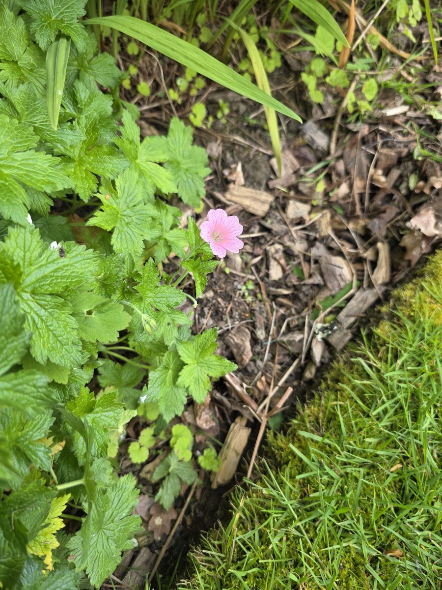

Looking after lawns, properly.
Mow · Edge · Scarify · Overseed · Feed
Message me on FacebookLooking after lawns, properly.
Mow · Edge · Scarify · Overseed · Feed
Message me on Facebook
I'm Cam. I run a solo lawn-care round across Great Preston, Garforth, Kippax and Allerton Bywater — and now a few lawns in Woodlesford. It's a weekend round — and kept that way on purpose.
Working weekends only means I'm selective about the lawns I take on, and that's deliberate. I'd rather do the whole work on a small number of lawns — the cut, the edges, the seasonal renovation — than rush a mow round as many as I can fit in a day.
Same price every time. Same person turning up.
Natural methods, no harsh chemicals. Two flows of work, side by side: the regular round that keeps a lawn tidy through the season, and the seasonal renovation that keeps it genuinely healthy.

Garforth·Kippax·Allerton Bywater·Great Preston
Now taking on a few lawns in Woodlesford.


Drop me a message on Facebook. We'll have a proper conversation about what your lawn needs.
Message me on Facebook